um conjunto de
um conjunto de  pontosdados.
Buscamos encontrar a função
pontosdados.
Buscamos encontrar a função  tal que o resíduo
tal que o resíduo
Nesta seção, discutiremos o procedimento de ajuste de uma reta a um conjunto de pontos dados. Em outras palavras, discutiremos o método de solução para o problema de encontrar o polinômio do primeiro grau que melhor se aproxima a um dado conjunto de pontos pelo método dos mínimos quadrados.
Seja, então, um conjunto de pontosdados.
Buscamos encontrar a função tal que o resíduo
 |
seja mínimo.
Para tal, primeiro observamos que  e, portanto, o resíduo
pode ser escrito explicitamente como uma função de
e, portanto, o resíduo
pode ser escrito explicitamente como uma função de  e
e  conforme a
seguinte expressão:
conforme a
seguinte expressão:
 |
Observamos que  é uma forma quadrática e que seu mínimo
ocorre quando suas derivadas parciais primeiras são iguais a zero, isto é
é uma forma quadrática e que seu mínimo
ocorre quando suas derivadas parciais primeiras são iguais a zero, isto é


 , o sistema linear acima pode ser escrito na forma
matricial
, o sistema linear acima pode ser escrito na forma
matricial  , i.e.,
, i.e.,
 | (7.1) |
Este sistema linear de duas equações e duas incógnitas admite uma única solução quando o determinante da matriz dos coeficientes for não nulo, isto é

Pode-se mostrar usando a desigualdade de Cauchy–Schwarz que isto
acontece quando existem pelo menos duas abscissas diferentes envolvidas no
ajuste. Usando a fórmula da inversa de uma matriz dois-por-dois, chegamos às
seguintes fórmulas para os coeficientes  e
e  :
:
Por fim, observamos que o sistema 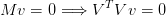 descrito na equação (7.1) pode ser reescrito na forma 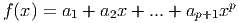, onde 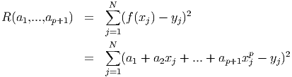 é a matriz dos coeficientes do seguinte sistema linear sobre determinado:
|
| (7.3) |
Se os pontos dados não são colineares, este sistema não têm solução. Mas, sempre que pelo menos duas abscissas foram diferentes, é uma matriz invertível e (veja o Exercício 7.1.4), então
|
| (7.4) |
nos fornece a chamada solução por mínimos quadrados do sistema (7.3). Note que esta é uma forma de se obter os coeficientes 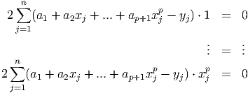 equivalente àquela dada em (7.2).
Exemplo 7.1.1. Retornemos ao exemplo 7.0.1. Isto é, dado o conjunto
de pontos , 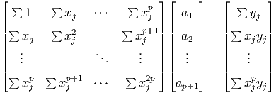,  , encontrar a função do tipo
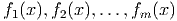 que melhor se ajusta os pontos dados no sentido de
mínimos quadrados.
, encontrar a função do tipo
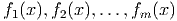 que melhor se ajusta os pontos dados no sentido de
mínimos quadrados.
Solução. Usando as fórmulas em (7.2), obtemos
Deixamos ao leitor a verificação de que os coeficientes  e 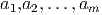 também
podem ser obtidos pela expressão (7.4).
e 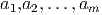 também
podem ser obtidos pela expressão (7.4).
Os coeficientes 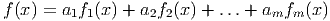 e 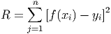 podem ser rapidamente calculados no Scilab usando a expressão (7.4). Para tando, digitamos:
Então, o gráfico da função ajustada e dos pontos pode ser obtido com os comandos:
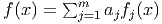
O procedimento apresentado de ajuste de uma reta por mínimos quadrados pode ser generalizado para qualquer família de funções que seja um espaço vetorial de dimensão finita. Problemas de ajuste com tais famílias de funções é o que chamamos de problemas de ajuste linear, os quais exploramos em detalhe na próxima seção.
E 7.1.1. Sejam dados o conjunto de pontos 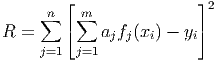, 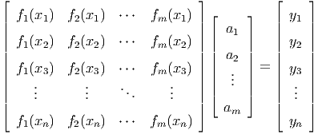, 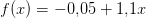. Encontre a função 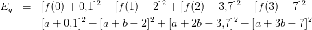 que melhor se ajusta no sentido de mínimos quadrados aos pontos dados. Faça, então, um gráfico com os pontos e o esboço da função ajustada.
Resposta. 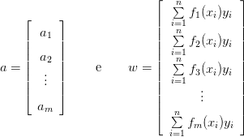. 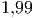
E 7.1.2. Seja dado o conjunto de pontos 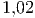, 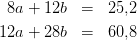, 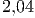, 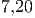. Encontre a função 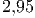 que melhor se ajusta no sentido de mínimos quadrados aos pontos dados. Faça, então, um gráfico com os pontos e o esboço da função ajustada.
Resposta. 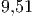. 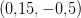
E 7.1.3. Seja dado o conjunto de pontos 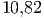, 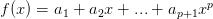,
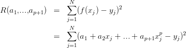,  . Encontre a função 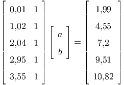 que melhor
se ajusta no sentido de mínimos quadrados aos pontos dados. Então, responda
cada item:
. Encontre a função 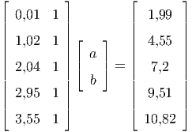 que melhor
se ajusta no sentido de mínimos quadrados aos pontos dados. Então, responda
cada item:
Forneça os valores calculados com 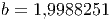 dígitos significativo por arredondamento.
Resposta. a)  ; b) 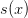; c) ; d) 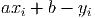.
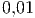
; b) 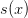; c) ; d) 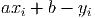.
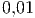
Resposta.
|
|
e
|
|
|
|
Agora, é uma combinação linear das linhas de igual a zero, logo , pois as linhas de são linearmente independentes como mostrado antes. Concluímos que se , então , i.e. é não singular.